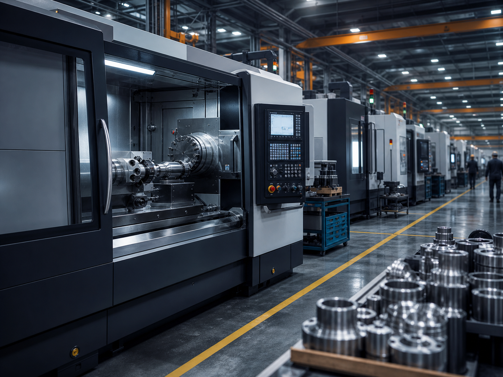

Certificações
Processos internos alinhados a boas práticas ISO 9001, rastreabilidade por ordem de produção e documentação técnica por projeto.
Desde 2008, a MetalCore combina experiência de chão de fábrica, engenharia aplicada e processos de qualidade para entregar componentes confiáveis.
A MetalCore nasceu em Joinville para atender empresas que precisavam de peças usinadas com mais previsibilidade. Ao longo dos anos, ampliou seu parque fabril, integrou programação CNC, controle dimensional e engenharia de manufatura para atuar em demandas de manutenção, produção seriada e projetos especiais.

Entregar soluções metalmecânicas precisas, confiáveis e viáveis para a continuidade produtiva dos nossos clientes.
Ser referência regional em usinagem CNC e fabricação industrial de alta complexidade técnica.
Precisão, responsabilidade, transparência, melhoria contínua, segurança e respeito ao prazo acordado.
Processos internos alinhados a boas práticas ISO 9001, rastreabilidade por ordem de produção e documentação técnica por projeto.
Programadores CNC, operadores, soldadores, projetistas e inspetores com experiência em ambientes industriais exigentes.
Inspeção com instrumentos calibrados, controle dimensional e relatórios conforme necessidade do cliente.
Rotinas de produção orientadas por segurança operacional, organização de fábrica e padronização de etapas.